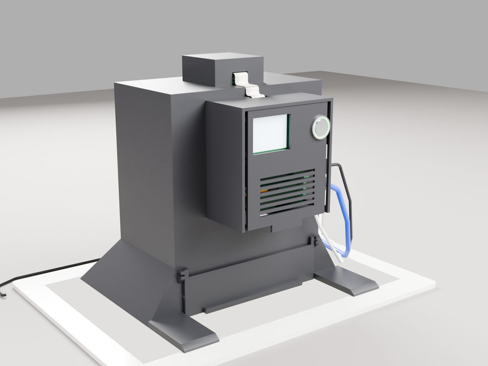

Clonogenic plate scanner · variant B · rev 3.0
Overview

What it is
A black tube that stands on an A4 LED light pad. A CELLTREAT 6-well plate slides in through a magnetic flap at the bottom; a Raspberry Pi HQ camera with an 8 mm lens looks down from 200 mm; a Raspberry Pi 5 rides a cassette in a bay on the back and hands raw frames to your Mac over one Ethernet cable. The cassette's outer face carries a 2-inch display and a ring-lit button that say what to do next, so you work with that face toward you and the slot right below it.
Two shots per plate
Lid up, press: the labels you wrote, backlit. Flip the plate toward you, press: the colonies through the well floors, with the marker ink pressed against the pad where it only casts a soft shadow.
Footprint on the pad
176 × 106 mm
Pixel on the colony plane
37.6 µm
Depth of field, F5.6
± 10 mm
Interactive model with exploded view, section cut and the load–flip–scan sequence: see the sticky note beside this sheet.